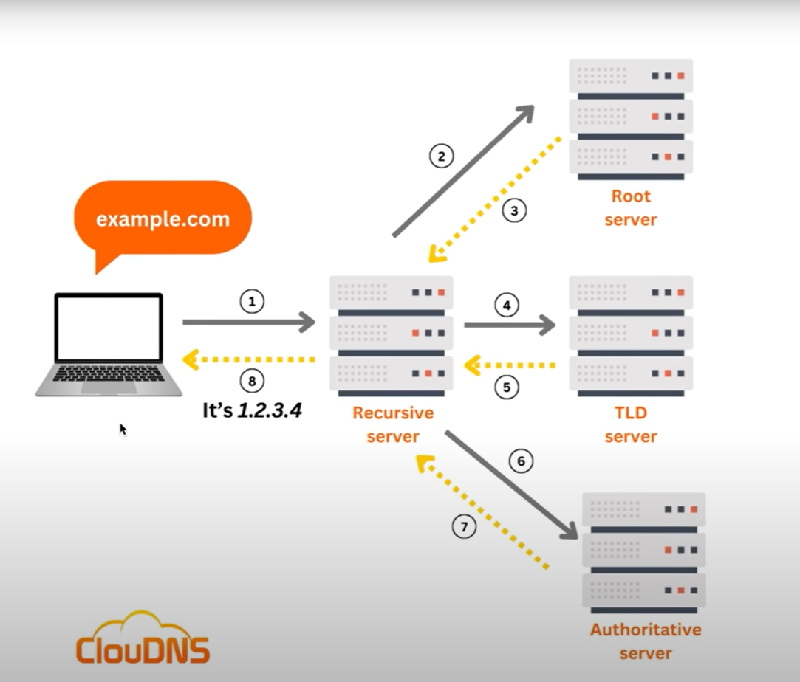

How Does Internet Work?
Summary from First Principles
As discussed in the initial parts of the video, the internet isn’t magic — it’s a series of logical solutions to fundamental problems:
-
Problem: How do we share data between two computers?
Solution: Use a direct physical link. -
Problem: How do we connect many computers efficiently?
Solution: Create a local network with a central switch. -
Problem: How do we connect many networks together?
Solution: Build an internetwork using routers. -
Problem: How do we locate a specific computer in this huge web?
Solution: Assign a universal IP Address to every device. -
Problem: How do we send data reliably and without errors?
Solution: Use a set of rules (TCP/IP) to break data into small, addressed packets that can be reassembled correctly.
IP Address(Internet Protocol Address)
An IPv4 (Internet Protocol v4) address is the classic format we often see.
- Structure: 32-bit number, shown as four decimals (0–255).
Example:
172.217.16.142(Google). - Limit: Only 232 ≈ 4.3 billion possible addresses.
When IPv4 was created, 4.3 billion seemed huge, but with today’s devices (phones, laptops, servers, smart gadgets), we ran out quickly. This scarcity is why we have public and private IPs.
NOTE:
- IP address diya jata hai jab mera device ka Internet ON ho.
- IP address kon deta hai? ⇛ ISP(Internet Service Provider)
DNS(Domain Name System)
DNS is the global, distributed system that translates the human-friendly domain names into the computer-friendly IP addresses. Without it, you'd have to memorize hundreds of IP addresses to browse the web

MAC Address
A MAC (Medium Access Control) Address is a unique, permanent serial number burned into every network-capable piece of hardware (your laptop's Wi-Fi card, your phone, your smart TV, the network port on your desktop).
Jab bhi hum kuch bhejte hai tab structure kuch aaise rehta hai ⇓
| Sender's IP | Sender's MAC | "Messages" | Reciever's IP | Reciever's MAC |
|---|
Port Number
Port numbers are numerical identifiers (0-65535) in computer networking that identify specific applications or services on a device. They work with IP addresses to direct network traffic to the correct service on a machine, with common ports assigned to standard applications like HTTP (port 80) and HTTPS (port 443).
Note:
- Port number 0-1023 are called Well Known Ports.
- Port number 1024-49151 are called Registered Ports.
- Port number 49152-65535 are called Dynamic or Private Ports.
Final the structure will be like ⇓
| Sender's IP | Sender's MAC | Sender's Port | "Messages" | Reciever's IP | Reciever's MAC | Reciever's Port |
|---|
Public vs Private IP Addresses
- Public IP: A unique address assigned by your Internet Service Provider (ISP). It’s visible on the internet and lets other devices find your network.
- Private IP: Used inside local networks (like your home Wi-Fi). Not visible on the internet, allows multiple devices (laptop, phone, TV) to connect through one public IP.
In short: Private IPs work within your network, while Public IPs connect your network to the wider internet.
Client–Server Architecture
The internet works on a client–server model. It’s a way of dividing roles between two sides:
- Client: The user’s device (like a browser or mobile app). It sends requests — for example, “Show me this webpage.”
- Server: A powerful computer that stores websites, apps, or data. It processes the request and sends back the response (like the webpage).
In short: Clients ask, Servers provide.